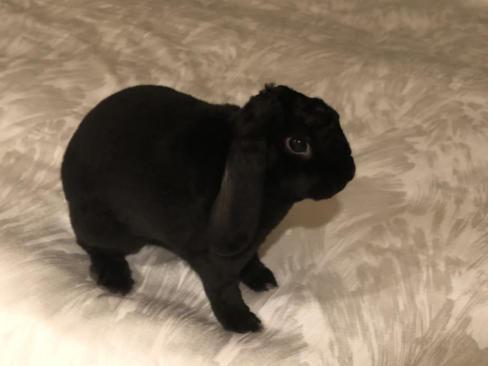
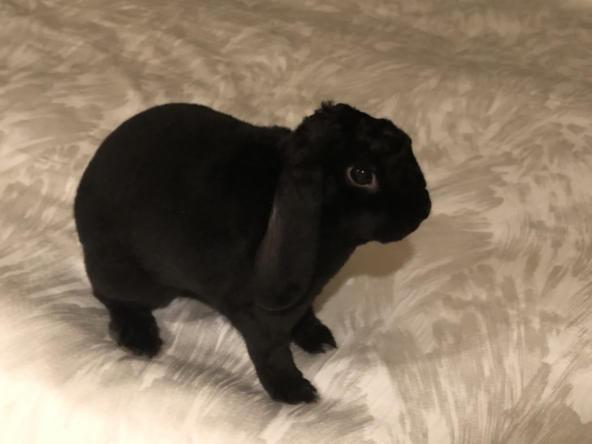
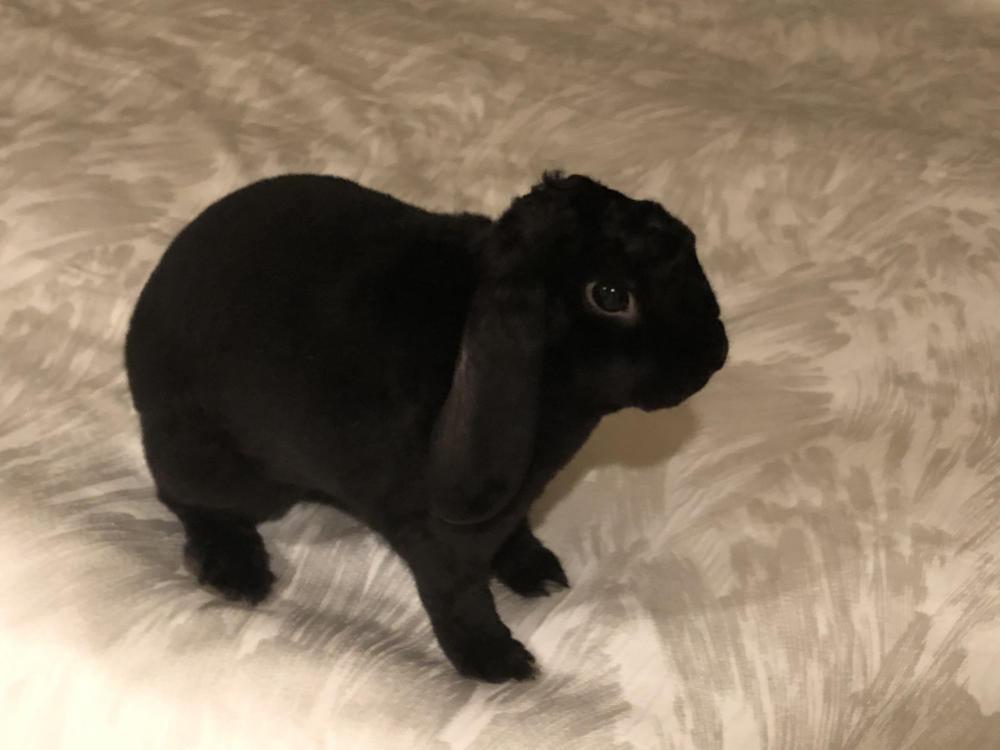

Aside from being the cutest lil thing in the world, Clyde is a plush mini lop rabbit. He was born on October 26, 2019 and has been making people "aww" ever since. As a smart bunny, Clyde is litterbox trained and lives free-roam (a.k.a. he has no cage). Typically, his breed weighs between three to four pounds. However, Clyde is a little chubby and weighs just over four. His hobbies include eating, throwing around his toys, sprinting across the room, and destroying my personal belongings.
